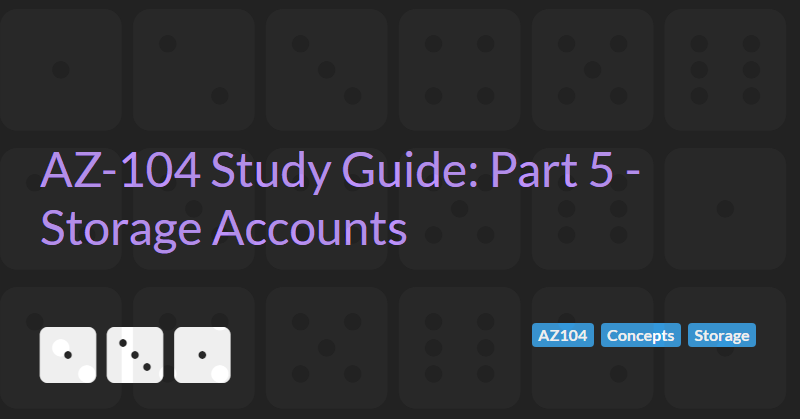

Azure Storage Accounts
The AZ-104: Azure Administrator Associate certification requires subject matter expertise in implementing, managing, and monitoring an organization's Microsoft Azure environment, including virtual networks, storage, compute, identity, security, and governance.
In part 5 of the guide we will cover managing storage accounts. Storage accounts are a fundamental part of Azure. Many services in Azure require a storage account or are abstractions built on top of storage accounts (e.g. recovery service key vaults). A storage account is a place where you can store files and unstructured data in Azure. Storage accounts can store files using a container metaphor (blobs stored in a container) or a file system metaphor (files stored in a folder structure like on Windows). In addition to files, storage accounts store key-value data in Tables, events and messages in Queues, and are also the underlying technology used to create drives on Virtual Machines (managed storage accounts).
Azure Storage Services Overview
Azure storage consists of the following components:
- Queue storage. Azure Queue Storage is a service for storing large numbers of messages. You access messages from anywhere in the world via authenticated calls using HTTP or HTTPS. A queue message can be up to 64 KB in size. A queue may contain millions of messages, up to the total capacity limit of a storage account. Queues are commonly used to create a backlog of work to process asynchronously.
- Table storage. Azure Table storage is a service that stores non-relational structured data. Because Table storage is schemaless, it's easy to adapt your data as the needs of your application evolve. Access to Table storage data is fast and cost-effective for many types of applications, and is typically lower in cost than traditional SQL for similar volumes of data.
- File storage. Azure Files offers fully managed file shares in the cloud that are accessible via the industry standard Server Message Block (SMB) protocol, Network File System (NFS) protocol, and the Azure Files REST API. Each file share within a storage account can be created with one of four access tiers:
- Cool: optimised for online archive storage scenarios. Cool optimises the price for workloads that don't have much activity, offering the lowest data at-rest storage price, but the highest transaction prices. Files in a Cool access tier must remain there for at least 30 days.
- Hot: optimised for general purpose file sharing scenarios such as team shares and Azure File Sync. Hot is for active workloads that don't involve a large number of transactions, and has a slightly lower data at-rest storage price, but slightly higher transaction prices as compared to transaction optimised (see below). Think of it as the middle ground between the transaction optimized and cool tiers. Data at rest costs are around x2 more that Cold and transaction costs are around 1/2 that of Cold.
- Transactional: suitable for transaction heavy workloads e.g. applications that require file storage as a backend store. Transaction optimised shares have a high data at-rest storage price, but a low transaction prices for reads, writes and deletes. Data at rest costs are around x3 more that Hot and transaction costs are around 1/4 that of Hot.
- Premium (only if the account is created with the Premium performance tier as described below). Premium shares have a highest data at-rest storage price, but no transaction fees for reads,writes and deletes. Data at rest costs are around x2 more that Transactional but transactions costs are zero.
- Blob storage (also known as Containers). Azure Blob storage is Microsoft's object storage solution for the cloud. Blob storage is optimized for storing massive amounts of unstructured data. Blob storage is further composed of 3 types:
- Block blobs store text and binary data. Block blobs are made up of blocks of data that can be managed individually. Block blobs can store up to about 190.7 TiB. Block blobs can only use the Hot, Cool or Archive access tier.
- Append blobs are made up of blocks like block blobs, but are optimized for append operations. Append blobs are ideal for scenarios such as logging data from virtual machines. Append blobs can only use the Hot access tier.
- Page blobs store random access files up to 8 TiB in size. Page blobs store virtual hard drive (VHD) files and serve as disks for Azure virtual machines. For more information about page blobs, see Overview of Azure page blobs. Page blobs can only use the Hot access tier.
Updating Access Tier Settings
The Default Access Tier Settings for Blob storage can be updated after the storage account has been created by going to the Configuration menu of the Storage Account blade. Defaults can be changed for Hot to Cool and vice versa.
Note that the Cool access tier is approximately half the price of the Hot tier for storage but twice the price for read/write/delete operations. In addition a file in the Cool tier must be in the tier for a minimum of 30 days. Files removed before the 30 day minimum are still charged.
In addition, the access tier of individual blobs in a container can be modified by selecting the Change tier menu item from the ... menu. Individual blobs may be archived. The storage cost of archived blobs is 1/10th of blobs in the Hot tier, however the blob will be inaccessible until it is rehydrated back to "Hot" or "Cool", which may take several hours. The archive tier is recommended only for log term archiving of data (e.g. backup files that may not be needed for over a year). Blobs that are archived must be in the tier for a minimum of 180 days. Files removed before the 180 day minimum are still charged.
The access tier of Azure File Shares cannot be changed after the share has been created. Files in a file share inherit their access tier from the parent file share and therefore cannot be changed either.
Capacity and Limits
By default a storage account can contain 5 PiB of data.
Data Redundancy
Azure Storage always stores multiple copies of your data so that it's protected from planned and unplanned events, including transient hardware failures, network or power outages, and massive natural disasters. Redundancy ensures that your storage account meets its availability and durability targets even in the face of failures.
The redundancy setting for a storage account is shared for all storage services exposed by that account. All storage resources deployed in the same storage account have the same redundancy setting. You may want to isolate different types of resources in separate storage accounts if they have different redundancy requirements.
The following types of redundancy settings are supported:
- Locally redundant storage (LRS) = 3 synchronous copies in the same data centre (in one availability zone and one region). LRS provides at least 99.999999999% (11 nines) durability of objects over a given year.
- Zone redundant storage (ZRS) = 3 synchronous copies in the three different availability zones (different buildings in one region). ZRS offers durability for storage resources of at least 99.9999999999% (12 9's) over a given year.
- Geo-redundant storage (GRS) = LRS + asynchronous copy to secondary/paired region (3 more copies in second region using LRS). The copy in the secondary region can only be accessed when primary region is unavailable and only as a read-only/recovery copy. GRS offers durability for storage resources of at least 99.99999999999999% (16 9's) over a given year.
- Read-access geo-redundant storage (RA-GRS) - GRS + read access to secondary region (without failure of primary region).
- Geo-zone-redundant storage (GZRS) = ZRS + asynchronous copy to second region (3 more copies in second region using LRS). The copy in the secondary region can only be accessed when primary region is unavailable and only as a read-only/recovery copy. GZRS is designed to provide at least 99.99999999999999% (16 9's) durability of objects over a given year.
- Read-access geo-zone-redundant storage (RA-GZRS) - GZRS + read access to secondary region (without failure of primary region).
The available redundancy options will be dependent on the region and type of storage account being created (see below). ZRS, GZRS, and RA-GZRS are available only in certain regions. For more information, see Azure Storage redundancy.
Updating Data Redundancy Settings
The Data Redundancy Settings of a storage account can be updated after the storage account has been created by going to the Configuration menu of the Storage Account blade.
Locally redundant (LRS) storage accounts can be upgraded to Geo-redundant (GRS and RA-GRS) but cannot be migrated to zone redundant storage (ZRS, GZRS, or RA-GZRS).
Types of Storage Account
Azure Storage offers several types of storage accounts. Each type supports different features and has its own pricing model.
- Standard general-purpose v2 storage accounts support Blob Storage (including Data Lake Storage), Queue Storage, Table Storage, and Azure Files. All redundancy options are supported. This type of storage account is recommended for most storage scenarios.
- Premium block blobs support Blob Storage (including Data Lake Storage) and LRS or ZRS redundancy options. Premium storage account type for block blobs and append blobs. Recommended for scenarios with high transaction rates or that use smaller objects or require consistently low storage latency. Premium block blob storage accounts are ideal for workloads that require fast and consistent response times and/or have a high number of input output operations per second (IOP).
- Premium file shares support Azure Files and LRS or ZRS redundancy options. Recommended for enterprise or high-performance scale applications. Use this account type if you want a storage account that supports both Server Message Block (SMB) and NFS file shares (Standard file shares only support SMB).
- Premium page blobs supports Page blobs and LRS redundancy. Page blobs are ideal for storing index-based and sparse data structures like OS and data disks for Virtual Machines and Databases.
Premium performance storage accounts use SSDs for low latency and high throughput.
Creating Storage Accounts
To create a new storage account via the Azure portal you need to:
- Go to the create storage account wizard. There are many ways to start the wizard including:
- Select new resource -> storage account from the menu
- Search for storage accounts
- Select add resource from within a resource group
- Select the basic options:
- Select the subscription and resource group that the storage account belongs to (or create a new resource group)
- Enter a unique name (all lowercase, no spaces, between 3 and 24 characters in length). The name forms part of the URI for the storage account and therefore must be globally unique.
- Select the region that the storage account will be created in.
- Select the desired Performance level. Either Standard or Premium. If Premium was selected, select either Premium block blobs, Premium file shares, or Premium page blobs.
- Select the redundancy options. The available redundancy options will be dependent on the region and type of storage account being created (Standard or Premium).
- Select Advanced Options:
- Security
- Require secure transfer for REST API operations (selected by default). If enabled this setting means that a secure connection must be used to transfer data to/from the storage account. The secure transfer option enhances the security of your storage account by only allowing REST API operations on the storage account using HTTPS. When you are using the Azure file service, connections without encryption will fail, including scenarios using SMB 2.1, SMB 3.0 without encryption, and some flavors of the Linux SMB client. Because Azure storage doesn't support HTTPS for custom domain names, this option is not applied when using a custom domain name. Connections via NFSv3 for blobs over TCP will succeed but will not be secured.
- Enable blob public access. When blob public access is enabled, one is permitted to configure container ACLs to allow anonymous access to blobs within the storage account. When disabled, no anonymous access to blobs within the storage account is permitted, regardless of underlying ACL configurations.
- Enable storage account key access. When storage account key access is disabled, any requests to the account that are authorized with Shared Key, including shared access signatures (SAS), will be denied. Client applications that currently access the storage account using shared key will no longer work.
- Default to Azure Active Directory authorization in the Azure portal. When this property is enabled, the Azure portal authorizes requests to blobs, queues, and tables with Azure Active Directory by default.
- Minimum TLS version. Sets the minimum TLS version needed by applications using your storage account's data. Default to TLS 1.2.
- Permitted scope for copy operations. Restrict copy operations from source storage accounts that are within the same Azure AD tenant or that have a private link to the same virtual network as this storage account. Defaults to "From any storage account" but can be restricted to "From storage accounts in the same Azure AD tenant" or "From storage accounts that have a private endpoint to the same virtual network".
- Data Lake Storage Gen2 settings (affecting Blob storage):
- Enable hierarchical namespaces. This allows the collection of objects/files within an account to be organized into a hierarchy of directories and nested subdirectories in the same way that the file system on your computer is organized. With a hierarchical namespace enabled, a storage account becomes capable of providing the scalability and cost-effectiveness of object storage, with file system semantics that are familiar to analytics engines and frameworks. Hierarchical namespace accelerates big data analytics workloads and enables file-level access control lists (ACLs). If this option is disabled then blob containers can only contain files.
- Enable SFTP (requires hierarchical namespaces to be enabled). Enables the SSH File Transfer Protocol for your storage account that allows users to access blobs via an SFTP endpoint. Local users need to be created before the SFTP endpoint can be accessed
- Enable network file system v3 (requires hierarchical namespaces to be enabled, is only supported with LRS or ZRS redundancy options, and is not supported for any geo redundancy option). Enables the Network File System Protocol for your storage account that allows users to share files across a network. This option must be set during storage account creation.
- Allow cross-tenant replication (requires hierarchical namespaces to be disabled). Allow object replication to copy blobs to a destination account on a different Azure Active Directory (Azure AD) tenant.
- (Blob storage) Access tier. The account access tier is the default tier that is inferred by any blob without an explicitly set tier. The hot access tier is ideal for frequently accessed data, and the cool access tier is ideal for infrequently accessed data. The archive access tier can only be set at the blob level and not on the account.
- Azure Files (settings only affecting Azure File Shares)
- Enable large file shares (not supported for any geo redundancy option). Provides file share support up to a maximum of 100 TiB. Large file share storage accounts do not have the ability to convert to geo-redundant storage offerings and upgrade is permanent.
- Security
- Select networking options:
- Network Access. Three options are supported:
- Enable public access. Enabling public access from all networks might make this resource available publicly. Unless public access is required, Microsoft recommend using a more restricted access type.
- Enable public access from selected virtual networks and IP addresses. Only the selected network will be able to access this storage account.
- Disable public access and use private access. Create a private endpoint to allow a private connection to this resource. Additional private endpoint connections can be created within the storage account or private link centre.
- Network routing. Determine how to route your traffic as it travels from the source to its Azure endpoint. Microsoft network routing will direct your traffic traverse the Microsoft cloud and exit as close to the external user as possible. Internet routing will direct your traffic to enter the Internet closest to the storage account and traverse the Internet to the external user. Microsoft routing is considered more private but does incur some additional data transfer costs. Internet routing is cheaper but less secure. Microsoft network routing is recommended for most customers.
- Network Access. Three options are supported:
- Select data protection options:
- Enable point-in-time restore for containers (requires hierarchical namespaces to be disabled). Point-in-time restore can be used to restore one or more containers to an earlier state. If point-in-time restore is enabled, then versioning, change feed, and blob soft delete must also be enabled.
- Enable soft delete for blobs. Soft delete enables you to recover blobs and directories that were previously marked for deletion. The soft delete retention period default to 7 days and can be set to between 1 and 365 days.
- Enable soft delete for containers. Soft delete enables you to recover containers that were previously marked for deletion. The soft delete retention period default to 7 days and can be set to between 1 and 365 days.
- Enable soft delete for file shares. Soft delete enables you to recover file shares that were previously marked for deletion. The soft delete retention period default to 7 days and can be set to between 1 and 365 days.
- Enable versioning for blobs (requires hierarchical namespaces to be disabled). Use versioning to automatically maintain previous versions of your blobs.
- Enable blob change feed (requires hierarchical namespaces to be disabled). Keep track of create, modification, and delete changes to blobs in your account. Logs can be kept forever or deleted after between 1 and 365 days.
- Enable version-level immutability support (requires Enable versioning for blobs to be enabled and therefore requires hierarchical namespaces to be disabled). Allows you to set time-based retention policy on the account-level that will apply to all blob versions. Enable this feature to set a default policy at the account level. Without enabling this, you can still set a default policy at the container level or set policies for specific blob versions.
- Encryption options:
- Encryption type. Data is encrypted by default using Microsoft-managed keys (MMK). For additional control, data can be encrypted using customer-managed keys (CMK) via the Azure Key Vault.
- Enable support for customer-managed keys. Customer-managed key (CMK) support can be limited to blob service and file service only, or to all service types. After the storage account is created, this support cannot be changed.
- Enable infrastructure encryption. By default, Azure encrypts storage account data at rest. Infrastructure encryption adds a second layer of encryption to your storage account’s data
Data Lake Storage Gen2 Blob Storage
Data Lake Storage Gen2 Blob Storage is a special type of Blob storage that is enabled when the Enable hierarchical namespaces option or other Data Lake Storage Gen2 options are enabled when creating a storage account.
Data Lake Storage Gen2 Blob Storage has some additional capabilities to standard Blob storage but also some addition restrictions.
Data Lake Storage Gen2 Blob Storage do not support:
- Point-in-time restore for containers
- Blob versioning
- Blob change tracking
- Version-level immutability support
Storage Account Capabilities
Storage Account have a number of capabilities. These can be seen and configured via the Capabilities tab on the Overview screen of the Storage Account blade.
Capabilities include:
- Static website. Allow hosting of static content on the blob service. When enabled a new
$webcontainer. Any static content uploaded to this container can then be viewed via the URL: https://[storage_account_name].z33.web.core.windows.net/. This default domain can be mapped to a more user friendly domain using the Custom domain feature. - Custom domains allow you to configure a custom domain for accessing blob data in your Azure storage account, like www.contoso.com. There are two methods you can use to set up a custom domain and both require creating CNAME records in the DNS provider to prove that you own the domain.
- Azure CDN. The Azure Content Delivery Network (CDN) is designed to send audio, video, images, and other files faster and more reliably to customers using servers that are closest to the users. This dramatically increases speed and availability, resulting in significant user experience improvements.
- Security via Microsoft Defender. Microsoft Defender for Storage detects potentially harmful attempts to access or exploit Blob containers and File shares in your storage accounts. Microsoft Defender is offered as a free trial for 30 days. And is charged at $0.02 per 10,000 transactions in Blob containers and File shares after the trail expires.
- Data protection. Data protection provides options for recovering your data when it is erroneously modified or deleted. These options are the same as those assigned when the storage account was initially created.
- Lifecycle Management. Lifecycle management offers a rich, rule-based policy for general purpose v2 and blob storage accounts. Policies can be defined to transition data to the appropriate access tiers or expire at the end of the data's lifecycle. A new or updated policy may take up to 48 hours to complete. With the lifecycle management policy, you can:
- Transition blobs from cool to hot immediately when they're accessed, to optimize for performance.
- Transition current versions of a blob, previous versions of a blob, or blob snapshots to a cooler storage tier if these objects haven't been accessed or modified for a period of time, to optimize for cost. In this scenario, the lifecycle management policy can move objects from hot to cool, from hot to archive, or from cool to archive.
- Delete current versions of a blob, previous versions of a blob, or blob snapshots at the end of their lifecycles.
- Define rules to be run once per day at the storage account level.
- Apply rules to containers or to a subset of blobs, using name prefixes or blob index tags as filters.
- Private endpoints. Use private endpoints to privately connect to a service or resource. Your private endpoint must be in the same region as your virtual network, but can be in a different region from the private link resource that you are connecting to.
Secure Access to Storage Accounts
Every request made against a secured resource in the Blob, File, Queue, or Table service must be authorized. Authorization ensures that resources in your storage account are accessible only when you want them to be, and only to those users or applications to whom you grant access.
Each authorization option is briefly described below:
- Azure Active Directory (Azure AD) integration is available for the Blob, Queue and Table services. With Azure AD, you can assign fine-grained access to users, groups, or applications via role-based access control (RBAC).
- Active Directory (AD) authorization for Azure Files supports identity-based authorization over SMB through AD. Your AD domain service can be hosted on on-premises machines or in Azure VMs. SMB access to Files is supported using AD credentials from domain joined machines, either on-premises or in Azure. You can use RBAC for share level access control and NTFS DACLs for directory and file level permission enforcement.
- Shared Key authorization relies on your account access keys and other parameters to produce an encrypted signature string that is passed on the request in the Authorization header. Access keys allow full access to the storage account. Keys should be kept in a secure location like Azure Key Vault, and replace/rotated often with new keys. The two keys allow you to replace one while still using the other.
- Shared access signatures (SAS) delegate access to a particular resource in your account with specified permissions, over a specified time interval, and (optionally) from a specific list of IP addresses. Shared access signature can be provided to clients who should not be trusted with your storage account key but whom you wish to delegate access to certain storage account resources. By distributing a shared access signature URI to these clients, you grant them access to a resource for a specified period of time. An account-level SAS can delegate access to multiple storage services (i.e. blob, file, queue, table). Note that stored access policies are currently not supported for an account-level SAS. Regenerating the access key used to create a SAS will invalidate the SAS.
- SAS tokens can be generated for the entire storage account via the Shared access signatures menu in the Storage account blade.
- SAS tokens for individual containers, blobs, file shares, or files can also be generated by selecting the resource in the Containers or File shares menu in the Storage account blade and selecting the
Generate SASoption from the...menu for the resource.
- Public. Blob resources can optionally be made public at the container or blob level. A public container or blob is accessible to any user for anonymous read access. Read requests to public containers and blobs do not require authorization.
Log Analytics
Basic monitoring information can be seen via the Monitoring tab on the Overview screen of the Storage Account blade. The monitoring tab allows you to view the Total egress (outbound traffic), Total ingress (inbound traffic), Average latency, and number of Requests across the entire storage account or just the blobs, files, queues or tables. Key metrics can be pinned to the dashboard.
The Monitoring section of the menu allows viewing more detailed information. This includes:
- Insights. Shows a more detailed summary of the failures, performance, availability, and capacity of the storage account.
- Alerts. Allow you to configure rules and receive alerts when a given condition or threshold is breached (e.g. if used capacity exceeds 100 GiB).
- Metrics. Allows you to configure a chart to monitor a specific aspect of a storage account.
- Workbooks are predefined templates of charts showing information about the storage account. You can create and share your own workbooks.
- Diagnostic settings are turned off by default. These settings allow you to run queries on who is accessing data and how frequently. Diagnostic settings can be archived to a storage account (as a log file that can be viewed later), sent to a log analytics workspace, streamed to an event hub, or sent to a partner solution.
- Logs. Once Diagnostic settings are turned on and events are being sent to a log analytics workspace, the Logs section allows you to view storage account logs using the Kusto query language. Depending on the Diagnostic settings tables for StorageBlogLogs, StorageFileLogs, StorageQueueLogs, and/or StorageTableLogs may be available.
Geo-Redundant Storage
Geo-redundant storage (GRS, RA-GRS, GZRS, and RA-GZRS) store copies of data in 2 data centres. The status of geo-redundant storage accounts can be seen on the Geo-replication menu of the Storage Account blade.
Access Endpoints can be viewed on the Endpoints menu of the Storage Account blade. The format of end points follows a standard naming convention:
- Primary Blob Service Endpoint = https://[storage_account_name].blob.core.windows.net/
- Primary File Service Endpoint = https://[storage_account_name].file.core.windows.net/
- Primary Queue Service Endpoint = https://[storage_account_name].queue.core.windows.net/
- Primary Table Service Endpoint = https://[storage_account_name].table.core.windows.net/
- Primary Azure Data Lake Storage file system endpoint = https://[storage_account_name].dfs.core.windows.net/
- Primary static website Endpoint = https://[storage_account_name].z33.web.core.windows.net/
For RA-GRS and RA-GZRS secondary endpoints are also available for read-only access:
- Secondary Blob Service Endpoint = https://[storage_account_name]-secondary.blob.core.windows.net/
- Secondary File Service Endpoint = https://[storage_account_name]-secondary.file.core.windows.net/
- Secondary Queue Service Endpoint = https://[storage_account_name]-secondary.queue.core.windows.net/
- Secondary Table Service Endpoint = https://[storage_account_name]-secondary.table.core.windows.net/
- Secondary Azure Data Lake Storage file system endpoint = https://[storage_account_name]-secondary.dfs.core.windows.net/
- Secondary static website Endpoint = https://[storage_account_name]-secondary.z33.web.core.windows.net/
The Geo-replication menu of the Storage Account blade can also be used to failover from the primary endpoint to the secondary endpoint in the event of a failure of the primary data centre. Failover converts the secondary storage account to a LRS account (which can be upgraded to a GRS or RA-GRS once the primary data centre has recovered). As data replication is asynchronous, failover could lead to some data loss. Failover should only be initiated if the primary is down for an extended period of time.
Copying Files with AzCopy
AzCopy is a command-line utility, available for Mac, Linux and Windows, that allows you to copy blobs or files to or from a storage account and between storage accounts (without needing to download the file locally first).
AzCopy can use Azure AD or shared access signature authentication (but not storage account keys).
Object Replication
When object replication is enabled, blobs are copied asynchronously from a source storage account to a destination account. Cross-tenant policies will appear under "Other accounts", along with policies on accounts not in an active subscription or on deleted accounts. The storage accounts may be in different Azure regions.
The destination container is marked as read-only by Azure.
Both the source and destination container need to be the same access tier.
Replication rules define the source and destination of the replication. Filters can be applied to limit the files that are copied to those matching a given prefix. A prefix match will find items like folders and blobs under the specified container that start with the specified input. For example, inputting "a" would filter any folders or blobs that start with "a". If multiple prefixes are specified, items that have any of these prefixes will be included.
By default a replication rule only copies new object. This can be changed to copy everything or only files created after a given starting date and time.
Object replication leverages the Blob change feed functionality of Blob containers (stored in the $blobchangefeed container) to determine which files should be copied.
Importing and Exporting Data to Azure
The Storage Explorer can be used to upload individual files into a storage account via the Azure Portal.
A Storage Explorer application can also be downloaded.
Utilities like AzCopy can also be used to move files.
Uploading large amounts of data using these tools can take a long time and consume a lot of bandwidth.
The Azure Import/Export service is used to securely import large amounts of data to Azure Blob storage and Azure Files by shipping disk drives to an Azure data center. This service can also be used to transfer data from Azure Blob storage to disk drives and ship to your on-premises sites. Data from one or more disk drives can be imported either to Azure Blob storage or Azure Files.
Azure CDN for Storage Accounts
Azure CDN is a distributed network of servers that can efficiently deliver web content to users. CDNs store cached content on edge servers in point-of-presence (POP) locations that are close to end users, to minimize latency.
The benefits of using Azure CDN to deliver web site assets include:
- Better performance and improved user experience for end users, especially when using applications in which multiple round-trips are required to load content.
- Large scaling to better handle instantaneous high loads, such as the start of a product launch event.
- Distribution of user requests and serving of content directly from edge servers so that less traffic is sent to the origin server.
Azure Content Delivery Network (CDN) includes four products:
- Azure CDN Standard from Microsoft
- Azure CDN Standard from Akamai
- Azure CDN Standard from Verizon
- Azure CDN Premium from Verizon
Azure CDN can be configured for an Azure Storage account by either:
- Searching for "Front Door and CDN profiles", selected add, choosing "Explore other offerings" and choosing one of the Azure CDN options
- Selecting "Azure CDN" from the Storage Account blade.
When created a CDN has an https://**.azureedge.net domain name.
Azure CDN supports multiple endpoints. An endpoint can be:
- The blob containers belonging to a storage account.
- A storage account static website.
- A cloud service
- A web app
- Any custom origin
Creating and Updating File Shares
When a new V2 storage account is first created no file shares exist. A new share can be created by going to the File Shares menu in the Storage account blade and clicking the + File Share button.
By default, file shares soft delete files for 7 days, have a maximum capacity of 5 TiB, and are configured for maximum compatibility (supporting SMB versions 2.1, 3.0 and 3.1.1; SMB channel encryption using AES-128-CCM, AES-128-GCM, or AES-256-GCM; Authentication via NTLM v2 or Kerberos; and Kerberos ticket encryption RC4-HMAC and AES-256).
Note that SMB 2.1 support also requires Secure Transfer to be Disabled (via the Storage Account Configuration menu).
Note also that 5 TiB is the maximum quota for a single file share unless Large file shares are enabled (via the Storage Account Configuration menu). Large file shares provides file share support up to a maximum of 100 TiB. Large file share storage accounts do not have the ability to convert to geo-redundant storage offerings and upgrade is permanent.
After a file share has been created the quota be reduced to less that the maximum configured. The access tier can also be changed. Unlike blobs, all files within a given file share are charged at the same access tier.
Connecting to File Shares
File shares can be connected/mounted on Window, Linux, and macOS devices. Scripts to mount a file share can be found by clicking the Connect button in the File share section of the Storage account blade.
On Windows, this Powershell script will check to see if this storage account is accessible via TCP port 445, which is the port SMB uses. If port 445 is available, your Azure file share will be persistently mounted. Organization and some Internet service provider (ISP) may block port 445, however you may use Azure Point-to-Site (P2S) VPN, Azure Site-to-Site (S2S) VPN, or ExpressRoute to tunnel SMB traffic to your Azure file share over a different port.
Note that the script uses the Storage Account key to authenticate access to the File share.
Storage Sync Service AKA Azure File Sync
Storage Sync Service, also known as Azure File Sync, allows organisations to centralise file shares in Azure Files, while keeping the flexibility, performance, and compatibility of an on-premises file server. Azure File Sync transforms Windows Server into a quick cache of your Azure file share. You can use any protocol that is available on Windows Server to access your data locally, including SMB, NFS, and FTPS. You can have as many caches as you need across the world.
- Create a "Storage Sync Service" in Azure
- Create a Sync group to define a Azure Files file share to be synchronised. Each Storage Sync Service can have multiple Sync groups.
- Download the Azure File Sync agent and install it on all servers you want to sync. the agent is supported on Windows Server 2019, Windows Server 2016, Windows Server 2012 R2, and Windows Server 2022.
- Use the server registration utility that opens to register the server to this Storage Sync Service.
Troubleshooting Azure File Sync
Microsoft provide an online troubleshooting guide for Azure File Sync issues. This covers installing the agent, ensuring pre-requisites such as Powershell 5.1 are installed, resolving authorisation problems, sync issues etc.
Implementing Backup and Recovery
Recovery services vault is an Azure service for backup and site recovery (search for "Recovery services vault" in the Azure search bar).
A recovery services vault must be in the same region as the Azure resource to be backed up. If there are Azure resources in multiple regions then multiple recovery services vaults are required.
Configuration settings for Recovery services vaults can be accessed via the Properties menu in the Recovery services vault blade. After a Recovery services vault you can alter some setting here, including:
- Backup configuration.
- Storage replication type. By default RSV uses GRS storage for backups. This can be changed to ZRS or LRS to reduce costs. The Storage replication type cannot be changed after protecting any items.
- For RSVs using GRS, cross-region restore can be enabled (it is disabled by default). Enabling this setting allows you to restore in the secondary region for both BCDR drills and outage scenarios.
- Encryption Settings. By default, the data in the Recovery Services vault is encrypted using Microsoft managed keys. However, you may choose to bring your own key to encrypt the backup data in this vault.
- Multi-user Authorisation. Resource Guards provide an additional authorization layer to protect critical operations that can affect data availability. Before protecting the vault, ensure that you have Resource Guard Reader permissions on the Resource Guard. Removing Resource Guard protection will require additional authorisation.
- Security settings.
- Soft Delete is enabled by default. Enable this setting to protect backup data for Azure VM, SQL Server in Azure VM and SAP HANA in Azure VM from accidental deletes.
- Security features are enabled by default. Enable this setting to protect hybrid backups against accidental deletes and add additional layer of authentication for critical operations.
- Security PIN. Enter this PIN when prompted by Azure Backup.
RVC Backup
Recovery services vault backups can backup Azure, Azure Stack Hub, Azure Stack HCI, and on-premises workloads.
Azure Stack Hub and Azure Stack HCI workloads require installation of a Microsoft Azure Backup Server (MABS).
On-premises workloads backups of files and folders require installation of the Recovery Services agent for Windows Server or Windows Client.
On-premises workloads backups of other types (including bare metal, Hyper-V, SQL server etc.) require installation of a Microsoft Azure Backup Server (MABS), System Center Data Protection Manager or other System Center product.
Azure workloads can backup:
- Virtual Machines
- Azure file shares
- SQL Server (hosted in a VM)
- SAP HANA (hosted in a VM)
Creating Azure File Shares Backups
Creating an Azure file shares backup involves:
- Selecting the Azure workload and Azure file shares as the Backup Goal.
- Selecting a storage account with a file share to backup
- Setting the backup policy (default to Daily with retention of 30 days)
Azure File Share Backup Policy uses snapshots for recovery point creation and restore operations. The snapshots are stored in the same storage account as the file share and not transferred to the vault.
Creating Virtual Machine Backups
Creating an Azure VM backup involves:
- Selecting the Azure workload and Virtual Machine as the Backup Goal.
- Selecting a VM to backup
- Setting the backup policy (default to Standard daily backup with retention of 30 days and instant restore snapshots retained for 2 days)
OR
- Selecting Backup menu from the Virtual Machine Blade
The OS Disk only option allows you to backup Azure Virtual Machine with only OS disk and exclude all the data disks - which is cheaper.
VM backups also support file recovery - allowing recovery of individual files from a backup.
- Select the
File recoverybutton from the Backup menu in the Virtual Machine Blade - Select the recovery point of the backup
- Download the script to mount the recovery services vault as a local hard drive.
Backup Reports
Diagnostic settings for Recovery Services Vaults are turned off by default. These settings allow you to run queries on backup activities. Diagnostic settings can be archived to a storage account (as a log file that can be viewed later), sent to a log analytics workspace, streamed to an event hub, or sent to a partner solution.
Once Diagnostic settings are turned on and events are being sent to a log analytics workspace, the Logs section allows you to view Recovery Services Vault logs using the Kusto query language.
The Backup Reports menu item in the Recovery Services Vault blade can also be used to view reports.
Deleting a Recovery Services Vault
Deleting a Recovery Services Vault is tricky because the soft delete settings on the vault and storage accounts mean the vault may have backup data for 14 days even after the resources that were being backed up have been deleted.
To delete a Recovery Services Vault prior to the expiry of the soft delete period you must:
- Disable soft deleted (from the Properties menu of the RSV blade)
- Delete, undelete and then re-delete any VM backups
- Unregister any Storage Account file by going to the Backup Infrastructure menu of the RSV blade, selecting Storage Accounts and unregistering it.
- Delete the RSV